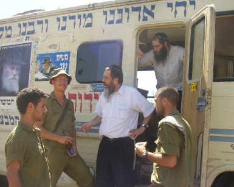

An Entire Night to Conquer Mt. Chermon
On Shavuos night, people are awake at times when the streets are usually empty and the world is still resting from the day’s activities. The shluchim are often as active at night as they are during the day. They don’t have set times for when they are “open” and “closed.” * Stories of shluchim workin

On Shavuos, the custom is to stay awake all night and recite the Tikkun Leil Shavuos and learn Torah. Perhaps this is a taste of messianic times when “the night will shine like the day” and “He makes an end to darkness,” when we will be able to learn Torah and do mitzvos all night.
In this week’s column, I present stories about shluchim who get involved in activities that continue through the night and sometimes several days and nights. Nearly every shliach can tell about situations like that, some of which were planned – such as the work that needs to be done before Yomim Tovim – and sometimes a one-time event, such as a house call that went through the night. Sometimes, it involves distributing mishloach manos in the army camps, when the work begins with the break of day. Generally, this greatly impresses the soldier who stands alone at his post and suddenly, at six in the morning, he sees a car drive up with a Lubavitcher who has mishloach manos for him. He will never forget that.
Another example is the shliach who gives out Shabbos pamphlets to neighboring kibbutzim every Thursday night. Sometimes, he is invited to a wedding on Thursday night which entails a two hour drive from his city and a two hour drive back. He gets home after the wedding at one in the morning and first starts folding the pages and heading out to the kibbutzim. That impresses the guard at the entrance to the kibbutz who excitedly tells his friends about the Chabadnik who showed up in the middle of the night.
AN ENTIRE NIGHT TO CONQUER MT. CHERMON
Rabbi Yitzchok Lifsh, shliach in Tzfas, told me about a similar incident that took place about 25 years ago. The Rebbe had announced the mivtza of printing Tanya in every possible place, and R’ Lifsh went with a group of Chassidim to print the Tanya at the military post in the Chermon.
“Rabbi Bentzion Cohen came from Kfar Chabad in a big van that had the printing apparatus and I joined him together with Rabbi Yaakov Chaim Jacobowitz. Late at night we arrived at the military post near the lower cable car station. We got electricity via an extension cord from the military post and we began printing. The printing machine was old and dilapidated, causing it to occasionally stop working, needing to be adjusted and to have parts changed. This was in the middle of the winter and it was freezing at the Chermon. Every few minutes we took turns going into the heated military bunker to thaw out our frozen limbs so we could continue working.
“The work continued into the night when the brigade commander showed up. He noticed unusual activity taking place in the middle of the night and he came to check out what was going on near the fence of the military post. We explained to him that this was an instruction from the Lubavitcher Rebbe to conquer the Chermon with the power of Torah and the wellsprings of Chassidus.
“He heard us out and expressed his amazement over the dedication of Chassidim who leave their warm homes to labor out there, near the Chermon, to print a Tanya as per the Rebbe’s orders. ‘If you need to conquer the Chermon,’ he said, ‘there is a better place to do it. I will take you to the highest post that commands the entire mountain, the Israeli Chermon post that is located directly opposite the Syrian Chermon post and we will print the Tanya there! That will be a complete conquest!’
“We went in a convoy behind the commander and got right up to the dangerous border and continued printing. Here too, the machine continued giving us trouble. Sometimes, too much ink came out and we had to slow down the printing. Dawn had broken and we were still printing. It was first noontime when we had about a thousand copies of the Tanya. After eighteen consecutive hours, including a night without sleep, we had conquered the Chermon.”
THE TANYA GOT RID OF THE AVODA ZARA
R’ Lifsh also related:
On another occasion, we went to print the Tanya in Mitzpeh Hararit, a small yishuv near Akko. At the time, it was a center for idol worship, meditation and other negative things. A young couple, Motti Katzir and his wife, lived on the yishuv. They took an interest in Judaism and asked that the printing of the Tanya take place in their yard.
Rabbi Bentzion Cohen, Betzalel Kupchik and I went to the yishuv and began printing. As usual, the machine kept breaking down and it took us all night. At some point, we noticed that someone was watching us through the shutters of the house next door. Every time we glanced at the other house, the person closed the shutter. We decided not to look directly at the house, but occasionally we peeked and saw a man standing there. He remained there all night watching us.
We later found out that an irreligious man who was a descendent of the Alter Rebbe lived there. When he heard that a Tanya would be printed in his yishuv, he felt personally implicated. He subsequently told Motti Katzir that he was so excited that he couldn’t sleep that night and he watched us print the book of his grandfather’s grandfather.
We saw the enormous spiritual impact of the printing of the Tanya on the yishuv not long afterward. Three weeks after the printing, the yishuv officially declared that it was getting rid of all idol-worshiping activity and the yishuv was open to anyone who wanted to live there.
By the way, Motti and his wife are now pillars of the Chabad community in Tzfas.
WHEN THE NIGHT SHINES AS THE DAY
Although R’ Yair Calev lives in Kfar Chabad, his shlichus (nearly) every night is carried out in a wide variety of locations where he is mekarev numerous people to Torah and mitzvos. R’ Calev lectures, farbrengs, sings and plays the guitar, night after night, for hours into the night, with dozens and sometimes hundreds of people riveted to his songs, stories and divrei Torah. His lectures are popular all over the country. Not surprisingly, he travels every night to a different location in Eretz Yisroel and abroad.
R’ Calev relates:
“I was invited to a farbrengen at a Chabad house in the US. Dozens of people showed up to the farbrengen, which went on until after midnight. I noticed an Israeli, a businessman and mekurav of the Chabad house, who sat and cried the entire time.
“After the official part of the farbrengen was over, only a few of the shliach’s closest friends remained; friends from K’vutza who serve as shluchim in Omsk – Siberia, Basel – Switzerland, Dusseldorf – Germany, and the man who cried. The small group farbrenged until dawn, and the Israeli mekurav was an enthusiastic participant.
“The next day, this Israeli gave the shliach a five figure donation, a huge sum relative to the man’s means and relative to the usual donations that the Chabad house receives.”
TANKISTIN WHO DON’T SLEEP
Rabbi Dovid Nachshon, director of the Chabad Mobile Mitzva Tanks in Eretz Yisroel, chuckled when I asked him for a story about “white nights.” “You want a story?! This happens all the time. Nearly all our tanks are active most of the day and most of the night.”
When I urged him to pick a story to share with our readers, he referred me to some young Tankistin. I wasn’t disappointed. What follows is a selection of stories from the Tankistin:
R’ Moshe Nachshon, Dovid’s son, was in the IDF during the Second Lebanon War. After a few days of fighting, he was given some time off which he used to work on the mitzva tanks that operated around the clock at that time, visiting soldiers the length of the Lebanese border. With the help of his cell phone, he was able to join a mitzva tank that was operating near the combat zone. On the tank were his father and the shliach Rabbi Moshe Asman who had come from the Ukraine. Moshe showed up in uniform, got on the tank and joined their outreach work.
“At a certain point, we arrived at a yishuv near the Lebanese border. The entire yishuv was empty due to the dangerous situation. Maybe six laypeople remained, who were responsible for security and infrastructure, along with many soldiers who guarded the yishuv in all directions.
“When we entered the yishuv, it was a few minutes before sunset. We managed to put t’fillin on with some soldiers. Then came a warning about the infiltration of terrorists and the entire area was closed to traffic. Nobody could come or go. Since that was the case, we on the tank decided to make a farbrengen to celebrate my father’s birthday. The soldiers came on the tank, l’chaims were poured, and the farbrengen began.
“Then two men came into the tank, residents of the area (out of the six who had remained), and realized they were in the midst of a farbrengen. One of them exclaimed, ‘I don’t believe it! A Chabad tank! 25 years ago, I ran after this tank and shouted and sang the 12 P’sukim that the Chassid on the tank taught us.’ He said to my father, ‘I have just one request. Bless me that my daughter will also run after a tank and sing the 12 P’sukim.’
“The atmosphere on the tank warmed up, the Rebbe’s bracha was felt in the atmosphere, and R’ Asman announced that he would donate money so they could buy another tank. And that was just the beginning …”
The farbrengen lasted deep into the night and then some more soldiers came in. They said that because of the terrorist infiltration, they could not bring food to many soldiers who were in lookout towers throughout the area.
“We have a jeep full of food, but the driver did not show up because all the roads are closed.”
They could not believe their ears when Moshe Nachshon, in his army uniform, got up and said, “I am a military driver and I will give out the food to the soldiers.” They considered this an open miracle that they would find a driver, in the middle of the night, with a military pass, who could save the soldiers from starving.
ALL OF RAMAT GAN IN A FARBRENGEN THROUGH THE NIGHT
Another Tankist, Shlomo Margolis, reminisced about an unusual nighttime activity:
“It was Yud Shevat of two years ago and the tank was operating in Ramat Gan. The shliach there, R’ Motti Gal, asked us to host a farbrengen on the tank while it traveled around the city, for the purpose of ‘including the entire city in a farbrengen.’
“We did as he asked and the traveling farbrengen lasted until three in the morning. We finally arrived at the police station where there were a few policemen on duty, and we included them in our unique farbrengen. At a certain point, R’ Dovid Nachshon, who had just returned from some other outreach work, joined us. The farbrengen got a new surge of energy and lasted until it was time for the morning Shma.”
MIRACLES THAT HAPPEN ONLY IN THE MIDDLE OF THE NIGHT
Yisroel Bukovza, a dynamic Tankist relates:
“There was a dinner in Tel Aviv in support of the tanks. All the tanks were to show up the night before, fully cleaned, at the Ganei Taarucha, for the exhibit and visits by donors and guests.
“The night before the dinner, we cut our work short and by midnight we had arrived at Elad where our tank would be thoroughly cleaned. While I was driving out of Elad, I heard an explosion. The right tire had blown out.
“We began looking for someone to help us change the tire. We called some repair people, but they said the vehicle was not running properly and the repair would cost many hundreds of shekels. While we wondered what to do, a huge tanker truck passed by that was transporting flour to one of the bakeries. A driver with a small car volunteered to chase after the truck and ask for help.
“The driver of the truck, a Russian fellow, was happy to help. He said, ‘It is almost Yom Kippur and I am happy to do a mitzva.’ He turned his truck around, came back to the tank, took out a repair kit and within twenty minutes the tank was ready at the Ganei Taarucha.
“We also worked around the clock on Independence Day. We parked in the national park in Ramat Gan and thousands of celebrants came on the tank, bought s’farim, said p’sukim, put on t’fillin, said brachos, etc.
“Between two and three in the morning, we saw a young man call out to his wife: ‘Here’s a Chabad tank; we must go on.’ They came on board, saw a video of the Rebbe, wrote to the Rebbe through the Igros Kodesh, and got into a discussion about Chabad and Chabad education. The woman said firmly, ‘I can tell you that when my children get older, they will definitely go only to Chabad schools.’”
A good resolution made at three in the morning.
Please say T’hillim for Yaakov Aryeh ben Rochel for a refua shleima.
Rabbi Yaakov Shmuelevitz. "An Entire Night to Conquer Mt. Chermon." Beis Moshiach, no. 835 (May 23, 2012).